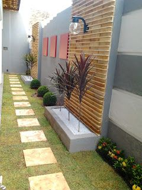

1. Preparo do Solo e Terreno
O sucesso de qualquer jardim começa com um solo saudável. Nossos especialistas preparam o terreno, garantindo que a base seja ideal para o crescimento das plantas escolhidas.

Depois de um planejamento cuidadoso, a fase de implementação é onde a mágica acontece. Nossa equipe de especialistas executa o projeto com precisão e atenção aos detalhes, garantindo que cada elemento seja instalado perfeitamente para o sucesso do seu jardim.
O sucesso de qualquer jardim começa com um solo saudável. Nossos especialistas preparam o terreno, garantindo que a base seja ideal para o crescimento das plantas escolhidas.
Instalamos sistemas de irrigação eficientes e automatizados, programados para fornecer a quantidade exata de água que suas plantas precisam. Isso garante a saúde do jardim e economiza água a longo prazo.

Nossa equipe faz o plantio de cada espécie conforme o projeto, desde árvores e arbustos até flores e gramados. Garantimos que cada planta seja colocada em seu local ideal, considerando a luz solar e a estética geral.

A fase de acabamento é o que diferencia um bom projeto de um projeto excepcional. Adicionamos elementos como pedras ornamentais, cascalhos, iluminação e caminhos para valorizar o design e criar um espaço funcional e belo.
